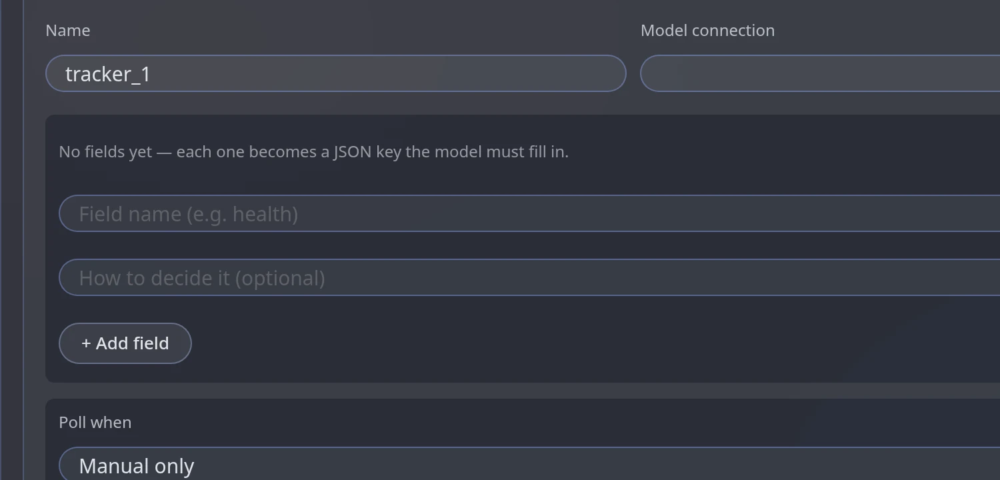
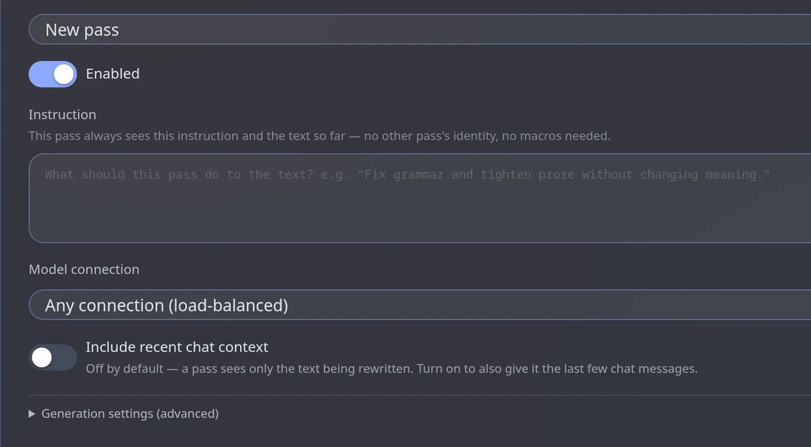
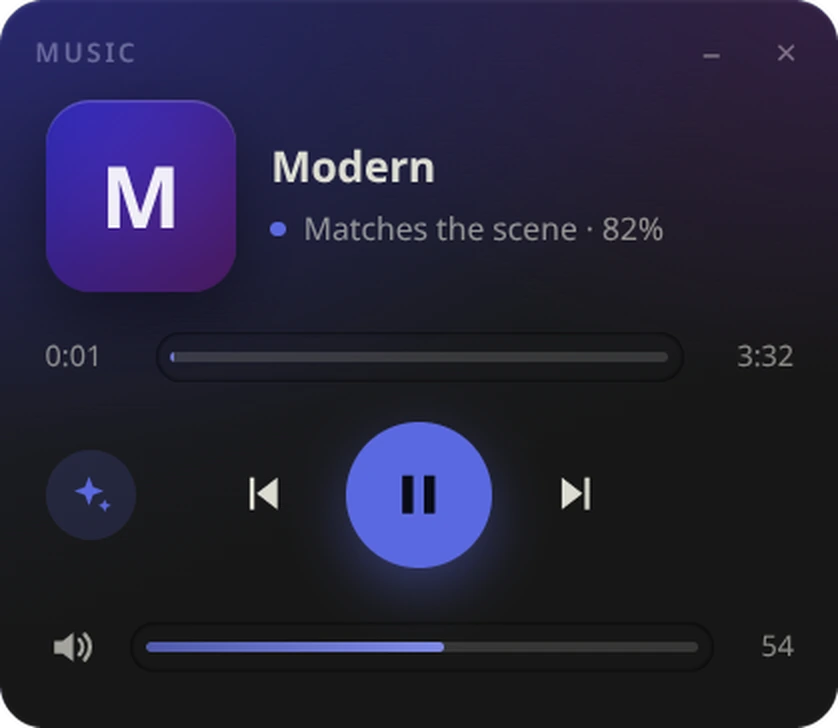

Your model writes the story.
Module Engine does the rest.
It keeps track of health, time and places, remembers what happened, polishes every reply, paints the scene and plays the music — each job done by a small module you switch on only when you want it.

A helper team around every message
Your favourite model still writes the reply. Around it, small cheap models do the bookkeeping — before, after and in the background.
Everything is a module. Switch on what you need.
Each feature has its own switch and its own settings. Nothing runs until you turn it on.

Know the state of the story at a glance
Health, mood, location, money — any value you name. A cheap model keeps it current after every reply and shows it in a small window you can drag anywhere.
- Use values in prompts as macros
- Saved per message — rerolls show the right value
- An in-world clock that knows it is already midnight
{{tracker_health}} → 82
Long chats that still fit the context
Old messages fold into summaries, level by level. The originals are hidden from the prompt, never deleted, and the newest messages are always sent as they are.
- Three levels, each folding the one below
- A protected window of recent messages
- An optional check of every higher-level summary
A map of who and what matters
A mind-map built from your chat: people, places, facts and events as nodes, connected by links and grouped into regions. The right memories are recalled by meaning.
- Regions that tidy themselves: duplicates merge, weak nodes fade
- Pathway view: see exactly what was recalled for the last reply
- Can start from your lorebook

Every reply, polished
Chain independent rewrite passes — cut clichés, fix style, check continuity — each with its own prompt and its own model. The final text replaces the reply.
- Passes run in order; each sees the previous result
- Auto-run after each reply, or by hand
- You say what must stay unchanged
Her eyes sparkled like stars as a shiver ran down her spine. She let out a breath she didn't know she was holding.
Mira's hand found the doorframe. Rain hissed on the slates; she counted three breaths before she spoke.

Decide exactly what the model sees
Reorder prompt blocks by dragging, send a block only when a condition is true, preview the real request and watch how much of it the provider can cache.
- Conditions: keywords, tracker values, chance, cooldown…
- Guided chain-of-thought steps with their own models
- Text rules that change only what is sent
See it. Hear it.
A text model turns the last messages into an image prompt and your backend draws it — with character avatars as reference photos. Music is picked by the meaning of the scene, locally, from your own tracks.
- Pollinations (free), OpenAI-compatible, Automatic1111
- 🎨 button under every reply, or paint automatically
- Your files or direct audio links

Small modules for particular needs
Your story is safe
Summaries hide old messages, they never remove them. Text rules change only what is sent. If prompt assembly ever fails, the original request goes through.
A module can only reach what its rights allow, through gates — it cannot touch the network or SillyTavern directly.
Everything runs in your browser. Optional sync goes straight to your own Google Drive, Dropbox or GitHub.
About the optional sync
ST Module Engine is an extension for SillyTavern. It adds modules, a generation pipeline, a memory graph and, optionally, synchronization of your SillyTavern files between your own devices.
The optional cloud synchronization lets you sign in with your own Google Drive or Dropbox account so that your files can be kept in step on all your devices. Nothing is sent to the author of the extension: the extension runs entirely inside your browser and talks to your cloud account directly.
Privacy policy · Terms of service · Source code and issue tracker
Add it to SillyTavern in thirty seconds
Copy the link, then Extensions → Install extension → paste → Install.